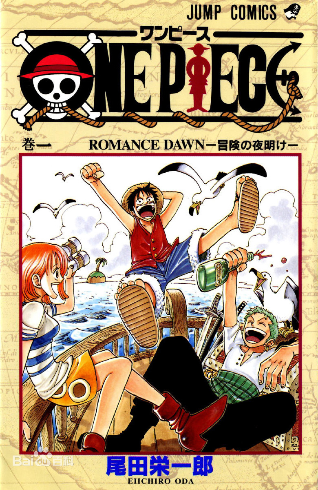

航海王
（1997年日本漫画家尾田荣一郎创作的少年漫画）
《航海王》是日本漫画家尾田荣一郎作画的少年漫画作品，于1997年7月22日在集英社《周刊少年Jump》开始连载。改编的电视动画《航海王》于1999年10月20日起在富士电视台首播。
2012年5月11日，《航海王》获得第41回日本漫画家协会赏 。本作被吉尼斯世界纪录官方认证为“世界上发行量最高的单一作者创作的系列漫画” 。2017年7月21日，日本纪念日协会通过认证，将每年的7月22日设立为“ONE PIECE纪念日”。
创作灵感
创作海贼故事是尾田荣一郎长久以来的梦想，他小时候一直很好奇为什么没有什么漫画以海贼为主题，他顶多只知道有《北海小英雄》这部动画。他认为男孩长到某个年纪后应该就会想要出海寻宝才对。尾田从小就很想看海贼的漫画，那个时候他对自己说，如果要自己画的话，那就一定会画海贼的故事。不管作品卖不卖得掉，他都是作好了心理准备才会这么选择的，纯粹就是他自己想看而已
尾田荣一郎在初一时，第一次画了海贼漫画，而尾田对孩子冒险所抱着的想象太丰富，就一本笔记本也画不完。他认识到用“一期完”的形式来画海贼漫画是不可能的，于是他决定要在《少年JUMP》上连载海贼漫画